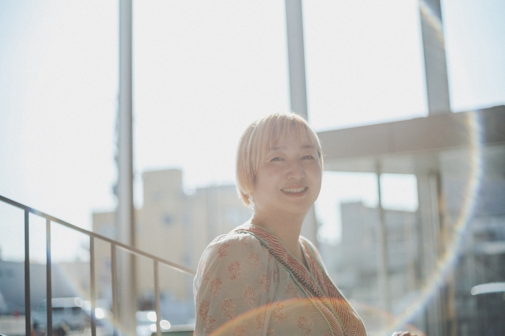

2026.12 — 2027.01
末広がりセッション
今年も残すところあとわずか。
2027年はどんな年になるんだろう。
どんなことに挑戦しようか。
私にはどんな可能性があるんだろう。
そんなことを考えるだけで
ちょっとワクワクするこの季節。
せっかくなら一緒に
2027年を企んでみませんか？
成金四柱推命で読み解く
あなたの運気と生まれ持った才能。
そして
今までたくさんの方のビジネスを見てきた
私だからこそ見つけられる
あなたの魅力や可能性。
その両方を使って
あなたの2027年のビジネスを
一緒に考えていく特別な60分です。
60分のセッションで、どちらも。
成金四柱推命
と
ビジネスコンサル
成金四柱推命
運気を知って終わりではなく
自分の持っている才能と運気を
どうビジネスに活かしていくのかを
お伝えしていきます。
ビジネスコンサル
ここからは
お一人おひとりに合わせた
ビジネスコンサルティング。
すでにビジネスをしている方には
実際のSNSや商品なども拝見しながら
あなたのビジネスの可能性を
一緒に探っていきます。
これからビジネスを始めたい方には
まだ何をするか決まっていなくても大丈夫。
あなたの中にあるものを使って
どんな面白いことができそうか
一緒に考えていきましょう。
FOR YOU
今のビジネスに悩んでいる方も
特に悩みはないけれど
もっと面白いことがしたい方も
大歓迎！
2027年の運勢を知るだけじゃなく
2027年の自分が楽しみになる。
話しているうちに
だんだん顔がほころんでいく。
気づいたら、前のめりになってる。
もしかしたら、泣いちゃうかもしれない。
「え！私そんなこともできるの？」
「それ、めっちゃやってみたい！」
そんな時間にしてもらえたら
嬉しいです。
さぁ
2027年は
どんな面白いことしようか。
OMIKUJI
2027年 さとくみおみくじ
※遊びのおみくじです。あなたの本当の星はセッションで♡
末広がりセッション
末広がりセッション
参加費
8,888円（税込）
開催期間
2026年12月〜2027年1月末
※お申し込みは1月末まで。
セッションはそれ以降でも大丈夫です。
募集人数
限定10名
セッション時間
60分
開催方法
Zoom
対象
ビジネスをしている方・
これからビジネスを始めたい方
PROFILE

さとくみ
ビジネス・マインドコンサルタント
福島県福島市出身
東京在住
夫と娘（9歳）と猫と暮らす
2022年6月起業
潜在意識を使った現実創造のマインドやビジネスを学ぶ
起業8ヶ月で初の月商７桁達成
11ヶ月で月商400万円達成
最高月商640万円達成
emotions（ビジネス講座）5期
さとくみ温泉（マインド講座）3期
kumicore1期、Cultureriz主催
通算10期連続講座開催
クライアント実績
月商1,000万円達成、臨時収入1,360万円
最高月商7桁達成続出 等々
あなたの2027年を
一緒に企めることを楽しみにしています♡